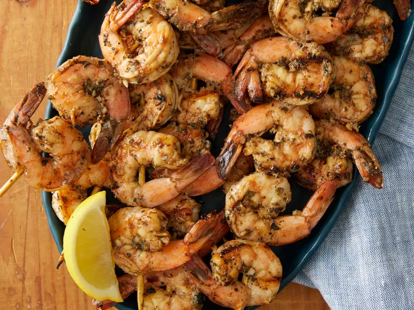

Grilled Garlic and Herb Shrimp

Why You'll Love This
Juicy and delicious grilled shrimp made with an easy marinade of fresh garlic,
lemon juice, olive oil, herb seasoning, brown sugar, and paprika. You can grill
the shrimp on skewers if you prefer. Every time I make these I have people begging
me for the recipe!
Ingredients
- 2 teaspoons ground paprika
- 2 tablespoons fresh minced garlic
- 2 teaspoons Italian seasoning, or to taste
- 2 tablespoons fresh lemon juice
- ¼ cup olive oil
- ½ teaspoon ground black pepper
- 2 teaspoons dried basil leaves
- 2 tablespoons brown sugar, packed
- 2 pounds large shrimp (21-25 per pound), peeled and deveined
Steps
-
Whisk paprika, garlic, Italian seasoning, lemon juice, olive oil, pepper, basil, and brown sugar
together in a bowl until thoroughly blended.
-
Stir in shrimp and toss to evenly coat with the marinade. Cover and refrigerate at least 2 hours,
turning once.
-
Preheat an outdoor grill for medium-high heat. Lightly oil grill grate, and place about 4 inches from
heat source.
-
Remove shrimp from marinade, drain excess, and discard marinade.
-
Place shrimp on preheated grill and cook, turning once, until opaque in the center, 5 to 6 minutes.
Serve immediately.
What To Serve with Grilled Shrimp
Grilling season calls for easy, vibrant side dishes.
Try a grilled corn salad or nutty rice pilaf to complement
the subtly sweet, smoky flavor of the shrimp. French mashed
potatoes would also make a delicious pairing.
How to Store Grilled Shrimp
Grilled shrimp can be refrigerated and enjoyed for three to four days.
Place cooked shrimp in an airtight container or wrap them tightly in plastic
for best results.
To freeze leftover grilled shrimp, wrap them in heavy-duty aluminum foil or
plastic before storage. Grilled shrimp will last up to three months in the freezer.